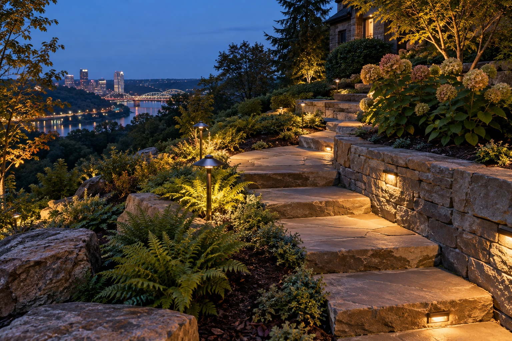
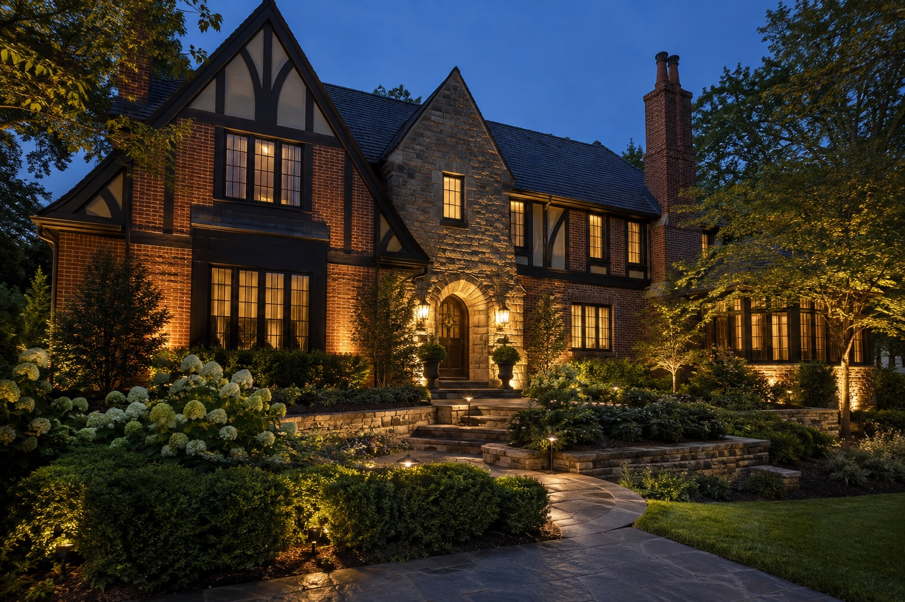
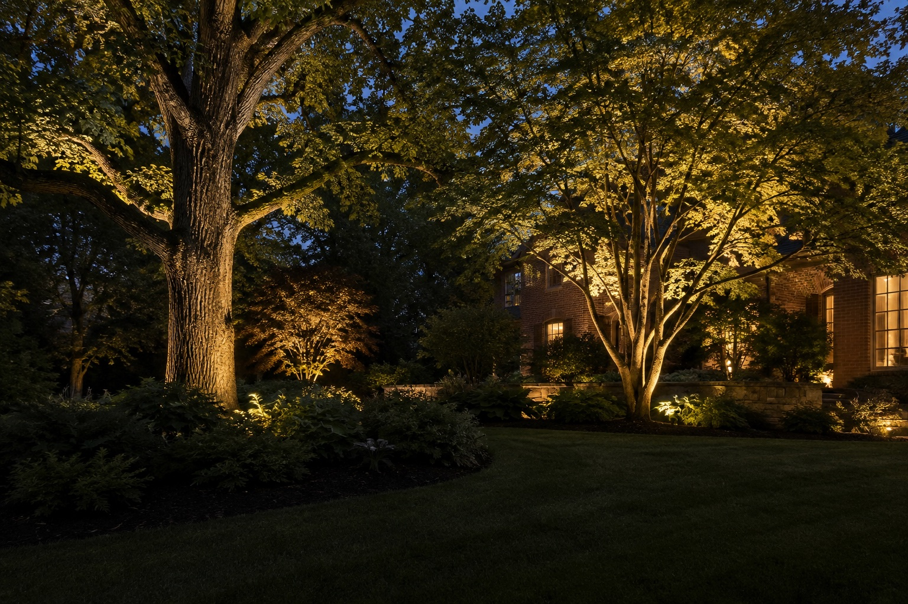
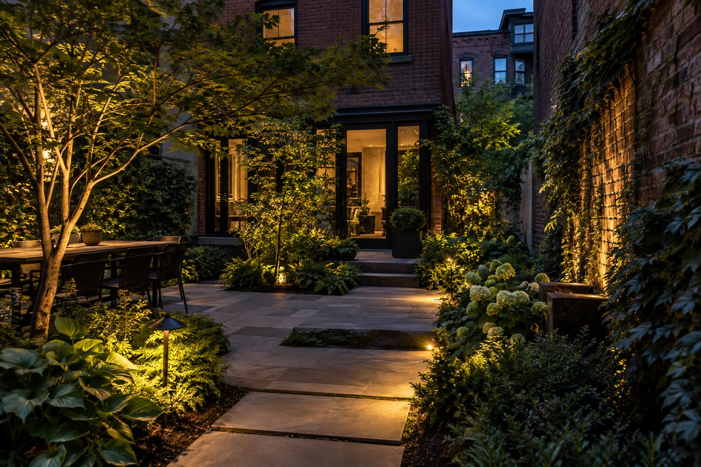

How to think about landscape lighting in Pittsburgh
Outdoor lighting is often described in terms of fixtures: path lights, uplights, step lights, and accents. Homeowners experience it differently. They notice whether the front walk feels welcoming, whether a patio invites one more hour outside, and whether the house still has character after the sun goes down.
A useful plan starts with those experiences. Then it considers the architecture, terrain, planting, and everyday routes through the property. This guide lays out the main decisions to discuss before design and installation.

1. Decide what the light should do
Most homes benefit from a mix of three goals: reveal the home's best features, make movement around the property more comfortable, and create atmosphere where people spend time. The balance is personal. A formal front elevation may call for architectural accents, while a family that uses a back patio every night may prioritize that space first.
Write down the places you care about from both inside and outside the home. A view from a living-room window can matter as much as curb appeal from the street.
2. Build layers, not a wall of brightness
Light becomes more interesting when some surfaces are visible and others remain quiet. A tree canopy, a textured wall, and a path can form three distinct layers. Floodlighting everything equally often removes that depth. A thoughtful design uses fixture placement and direction to create a sequence of views.
Warm light can be especially inviting on brick, stone, wood, and planting. The exact effect depends on the materials, surroundings, and the look you want.



3. Study the routes through the property
Walk the property after dark. Notice turns, level changes, and places where you pause. Pittsburgh-area homes can have varied grades, steps, and retaining walls. Those features can be beautiful, but they also influence where light is useful and how glare appears from different heights.
The best path lighting is not necessarily a perfectly spaced line of identical fixtures. It can combine a few path lights with step illumination and nearby landscape accents, depending on the setting.
4. Design the spaces where evenings happen
A patio, deck, or garden seating area should have enough light to feel comfortable without losing its evening mood. Think about arrivals and exits, conversation areas, the surrounding view, and what the space looks like from the house. Lighting a feature beyond the patio can help the outdoor room feel connected to the whole landscape.
5. Think about the system over time
Low-voltage systems use a transformer and connected fixtures, but design quality depends on much more than choosing equipment. Placement, aiming, wire routes, future planting growth, and access for service all matter. Ask how an existing system could be adjusted later if the landscape changes.
Questions to bring to your first conversation
- Which spaces do you use most after sunset?
- What parts of the home or garden should stand out?
- Where are the steps, turns, or transitions that deserve attention?
- What views matter from inside the home?
- Is there an existing lighting system to retain or refresh?
- Which nearby town or neighborhood is the property in?
Explore Lumascapes' lighting services, browse the illustrative concept gallery, or start a conversation about your Pittsburgh-area property.